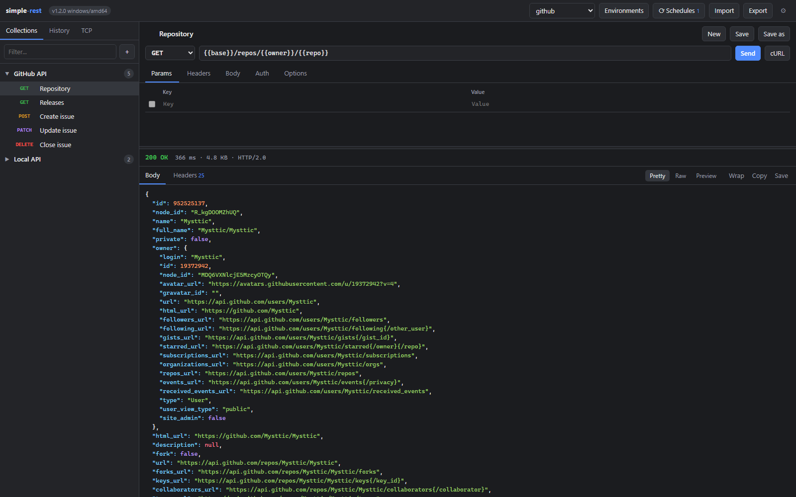
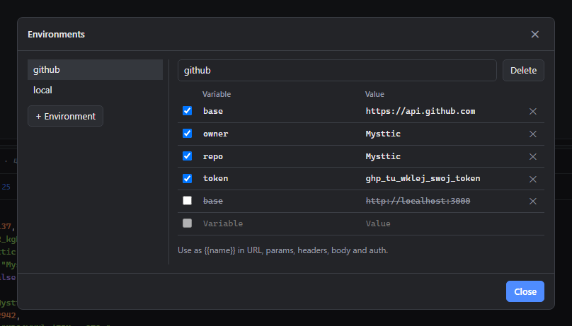
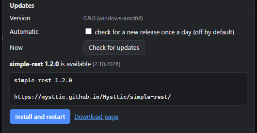
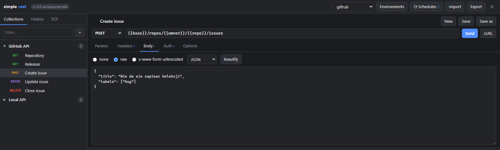
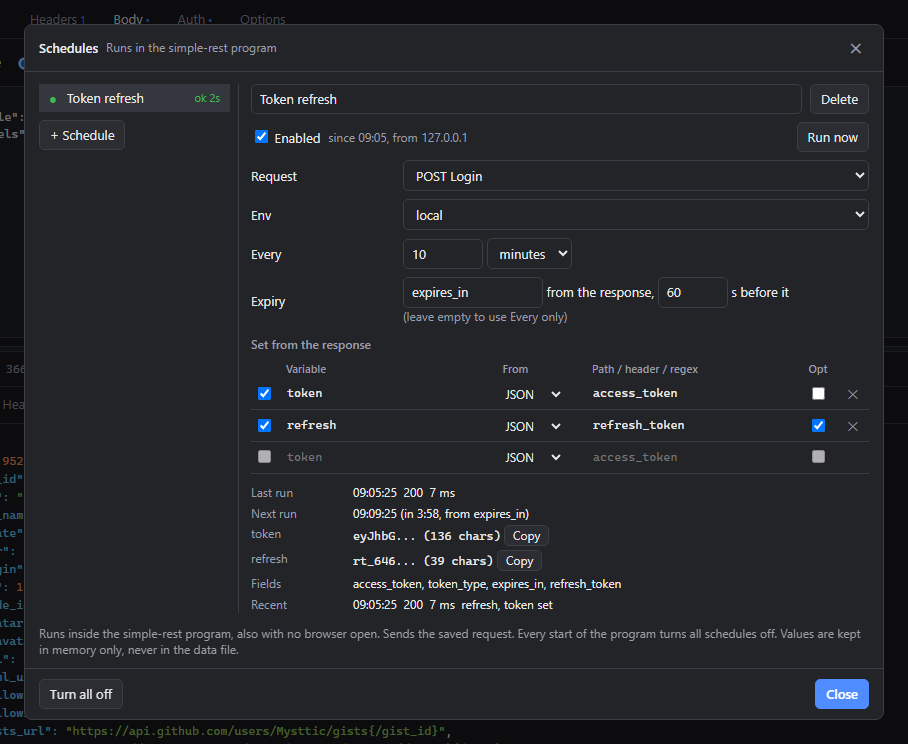
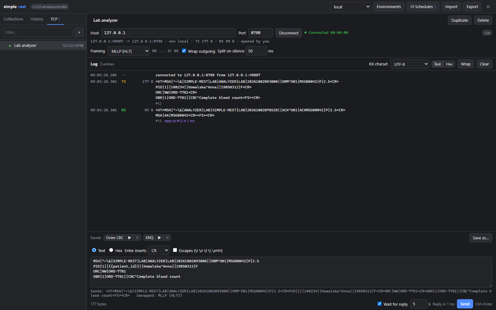

Collections, environments, history and a response viewer, like the big tools, without the installer, the account or the cloud. Schedules keep tokens fresh, and a TCP console talks to devices on your network.
Download one file, run it, the browser opens. That is the whole setup.

Latest release: checking…
One .exe, no installer. Put it in a folder of its own: it
keeps its data next to itself and updates itself in place.
A static binary for any distribution, nothing to install.
chmod +x, run, done.
For a Pi 3, 4 or 5 running a 64-bit system. Start it there with
-listen 0.0.0.0:8787 and reach the UI from any machine on a
network you trust.
SHA-256 of the three files above, the same list the updater inside the app verifies a download against.
Download checksumsThe files are not signed with a certificate, so Windows SmartScreen shows “Windows protected your PC”. Choose “More info”, then “Run anyway”. Once running, the app can tell you when a newer release is out and install it for you; that check stays off until you turn it on in Settings.
Everything a day of API work needs, in a browser tab served by a 7 MB binary.
The page in your browser talks only to the program. The program sends the real request, so any API answers, with every header visible.
Every method, query parameters synced with the URL, headers, raw or form bodies, Basic, Bearer and API key auth, timeouts, redirects, TLS verification and a cookie jar.
Saved requests in collections, a history of what you sent, and
{{variables}} from the active environment substituted in
URL, headers, body and auth.
The program sends a saved login request every few minutes, also with
no browser open, and puts the token from the answer into
{{token}}. Values stay in memory, and every start of the
program turns the schedules off.
The program connects as a client to a device or system anywhere on
your local network and keeps the connection open until you
disconnect. Framing presets None, MLLP, STX/ETX, LF and CR LF,
{{variables}} in messages, and Wait for reply that times
the answer.
Import a Postman Collection v2.1 or a Postman environment, export
your own as JSON, copy any request as a curl command.
Status, time, size and protocol, headers, JSON with colours, raw text, an HTML or image preview, copy or save the body to a file.
Collections, history and environments live in a JSON file next to the program. Move the folder and everything comes along.
One window: what you are sending on top, what came back underneath.





By default the program listens on 127.0.0.1 only and refuses requests
that other websites in your browser send to it. It has no password:
other programs on the same machine can use it, and once started with
-listen 0.0.0.0:8787 so can anyone on your network, who then
sees your variables and the tokens your schedules set. Do that only on a
network you trust.
No telemetry, no account, nothing collected. The app sends requests by itself only for what you turn on: the check for a newer release and the schedules you enable. Both start off, and every start of the program turns the schedules off again.
The updater fetches the release from this site, checks the size and the SHA-256 against the published list, and only then swaps the file.